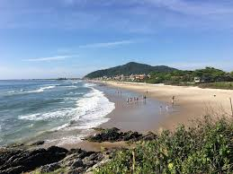

<html lang="pt-BR"></html>
<head>
    <meta charset="UTF-8">
    <meta name="viewport" content="width=device-width, initial-scale=1.0">
    <link rel="stylesheet" href="style.css">
    <link rel="preconnect" href="https://fonts.googleapis.com">
    <link rel="preconnect" href="https://fonts.gstatic.com" crossorigin>
    <link href="https://fonts.googleapis.com/css2?family=Bai+Jamjuree:ital,wght@0,200;0,300;0,400;0,500;0,600;0,700;1,200;1,300;1,400;1,500;1,600;1,700&display=swap" rel="stylesheet">
    <title>Em Busca do Tesouro Perdido</title>
</head>
<body>
    <main>
        <div class="passo ativo" id="passo-0">
            
            <p>Ontem estava na biblioteca a procura de um livro sobre os maias, pois no museum onde trabalho como arqueologa, recebemos uma doação de um artefato que acredito ser da era maia.</p>
            <button class="btn-proximo" data-proximo="1">Proximo</button>
        </div>
        <div class="passo" id="passo-1">
            
            <p>Estava passando por um corredor quando um livro verde na estante me chamou a atenção, e por curiosidade o peguei.
            Ao abri-lo encontre uma carta que me levaria até um tesouro perdido cercado por bela riquezas naturais.
            Minha curiosidade falou mais auto e decidi seguir as pistas descritas nas cartas.</p>
            <button class="btn-proximo" data-proximo="2">Rio de Janeiro</button>
            <button class="btn-proximo" data-proximo="3">Santa Catarina</button>
        </div>
        <div class="passo" id="passo-2">
            
            <p>Você agora inicia sua jornada no Rio de Janeiro,e ao amanhecer começa a subir o morro da barra da Tijuca, em busca de suas primeiras pistas.</p>
            <button class="btn-proximo" data-proximo="4">Seguir até o topo, e procurar pela pista.</button>
            <button class="btn-proximo" data-proximo="5">Desistir e voltar para casa.</button>
        </div>
        <div class="passo" id="passo-3">
            
            <p>Em Santa Catarina, você visita a histórica cidade de São Francisco do Sul. Na carta, uma das pistas diz que para encontrar o local onde o tesouro está escondido você precisa procurar a próxima pista em um dos pontos turísticos da cidade. Por qual você começaria?</p>
            <button class="btn-proximo" data-proximo="6">Investigar no Museu Nacional do Mar Embarcações Brasileiras</button>
            <button class="btn-proximo" data-proximo="7">Explorar a Praia do Itaguaçu</button>
        </div>
        <div class="passo" id="passo-4">
            <p>No topo do Pico da Tijuca, você encontra uma inscrição antiga em um muro de pedras, sua linguagem é Inca, mas por ser uma arqueológa, percebe-se que a inscrição diz "a proxima pista está localizada no Amazonas."</p>
            <button class="btn-proximo" data-proximo="8"> Ir para o Amazonas</button>
        </div>

        <div class="passo" id="passo-5">
            
            <p>Você decide que a aventura é um desafio grande demais para suportar e retorna para casa, mas se  questiona constantemente o que teria encontrado se resolveçe continuar a aventura.</p>
        </div>

        <div class="passo" id="passo-6">
            
            <p>No Museu Nacional do Mar Embarcações Brasileiras, você descobre um mapa antigo embaixo de uma das atrações exibidas, apontando para a pista sequinte , que está no Amazonas.</p>
            <button class="btn-proximo" data-proximo="8">Viajar até o Amazonas</button>
        </div>

        <div class="passo" id="passo-7">
            
            <p>Explorando a Praia do Itaguaçu, você encontra uma abertura entre algumas rochas, que aparenta ser uma caverna. Ao entrar percebe que ela leva a um beco sem saída.</p>
            <button class="btn-proximo" data-proximo="9">Retornar e ir explorar o Museu Nacional do Mar Embarcações Brasileiras</button>
        </div>

        <div class="passo" id="passo-8">
            
            <p>No Amazonas, a busca por esse "tesouro" se intensifica ainda mais que o esperado, devido as dificuldades encontradas.Após algumas horas de caminhada pela mata você se depara com um rio bifurcado, e precisa descidir qual caminho seguir.</p>
            <button class="btn-proximo" data-proximo="10">Seguir pelo rio à esquerda</button>
            <button class="btn-proximo" data-proximo="11">Seguir pelo rio à direita</button>
        </div>

        <div class="passo" id="passo-9">
            <p>De volta ao Museu Nacional do Mar Embarcações Brasileiras, você finalmente encontra algo, um antigo mapa, indicando que a aventura continua no Amazonas.</p>
            <button class="btn-proximo" data-proximo="8">Seguir para o Amazonas</button>
        </div>

        <div class="passo" id="passo-10">
            <p>O rio à esquerda leva você a uma cachoeira escondida com o que aparentavam ser uma variação dos hieróglifos os quais revelavam o local do tesouro.</p>
            <button class="btn-proximo" data-proximo="12">Explorar o local onde está escondido o tesouro.</button>
        </div>

        <div class="passo" id="passo-11">
            <p>O rio à direita termina em uma área pantanosa. Apesar de possuir uma incrivel beleza natural, não há sinais do tesouro por ali.</p>
            <button class="btn-proximo" data-proximo="13">Retornar e tentar o outro caminho</button>
        </div>

        <div class="passo" id="passo-12">
            
            <p>O local onde está o tesouro é uma cidade antiga aparentemente inabitada, e percebe que o tesouro era nada mais, que a tão curiosa cidade perdida do Amazonas, repleta de artefados historicos, por isso você decide se dedicar a estudar e preservar este lugar que contem tamanha importância para história daquele local.</p>
        </div>

        <div class="passo" id="passo-13">
            <p>Retornando e escolhendo o rio à esquerda, você finalmente encontra a cachoeira escondida e as inscrições que levam ao tesouro.</p>
            <button class="btn-proximo" data-proximo="12">Explorar o local onde está o tesouro.</button>
        </div>
    </main>
    <script src="script.js"></script>
</body>
</html>